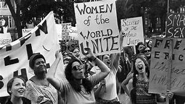

" Part of feminism is giving other women the freedom to make choices that you might necessarily make yourself."
THE BEGINNING OF FEMINISM
The birth of feminism in the United States begins with The Seneca Falls Convention of July 19-20, 1848. This convention was written by Elizabeth Cady Santon and it was to counter the power of men. During this beginning of Feminism 2 ideals are opposed. The first one is constituted by a request of equality man woman by putting forward arguments of natural equality. The second one justifies a superiority of the woman over the man because of some features which would be proper to the woman such as purity or compassion.
ORGANISATIONS CREATION
At the end of the 19th century, women were especially concerned about being allowed to vote, which they wanted to obtain. In 1890, the foundation "National American Woman Suffrage Association" was created. This foundation prohibited militant actions and criticism of religion. This 30 years long period is called Progressive era. The feminists of this era tried to fight against prostitution or against alcoholism; they fought against the vices of men. For example the association "Women's Christian Temperance Union" gathers many women. Feminist associations were mainly made up of white women from the bourgeoisie because black women were not allowed to join. For this reason, these women created other groups and succeeded in creating the "National Association of Colored Woman" in 1896. The associations created by the black women are especially present to abolish the racial discriminations that they endured. Women such as Harriet Tubman fought for the rights of women, especially African-American women. A certain number of women, especially those from the working class, therefore the poorest in society, were attracted by anarchism or socialism. According to most feminists, capitalism exploits women, so the end of this social organization will result in women's liberation. But the equality of civil rights is not the only goal of these women, there are also other more extravagant requests like sexual liberation with the rejection of the Christian society. These ways of thinking are typical of the "Feminism" tendency. A very influential group of this movement is Heterodoxy, created by Marie Jenney Howe in 1913 in Greenwich Village. In 1916 the "National Women's Party" was created as a criticism of a party that they thought was not demanding enough. The criticized party was the National American Woman Suffrage Association. The new party was very demanding and organized important actions such as the occupation of the street in front of the White House in 1917.
RIGHTS FINALLY ACQUIRED
The women succeeded in obtaining the right to vote in 1920 in the United States. In 1963, John F Kennedy published a report on the equality of men and women by the Commission on the Status of Women, which spoke of the discrimination against women. In 1964 women obtained a legislative victory with the law on equal pay.. There is also a decision taken by the Supreme Court of the United States that cancels one of the last laws that prohibited contraception. In 1972, for example, a law was adopted for the equality of women's education
THE NEW ERA OF FEMINISM
At the end of the 1900's there are new types of feminism that appear such as Black feminism which talks about the discrimination that black women undergo specifically. This is how the 3rd wave of feminism will be announced with intersectionnality and new figures such as Michelle Obama or Oprah Winfrey. There is also the beginning of new movements like the MeToo in 2006 by Tarana Burke. Finally, 10 years after the launch of MeToo, there is the #MeToo that appears on social networks and that helps women to talk about what they have endured.
I you want to see the important events and dates in the United States Click here